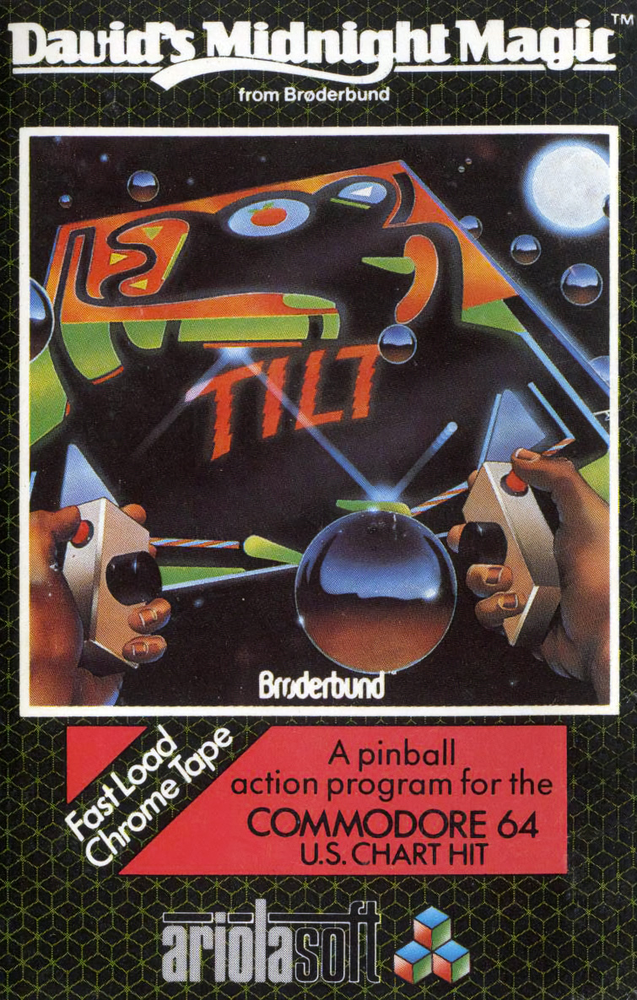

David's Midnight Magic
David's Midnight Magic is an early home-computer pinball simulation created by David Snider. Brøderbund first published the Apple II original in 1982, followed by Atari 8-bit and Commodore 64 versions; Martin Kahn programmed the Commodore 64 conversion. Ariolasoft published the Commodore 64 edition in the UK and Europe. The single-screen table was closely inspired by Williams' Black Knight machine. It recreates features unusual in early computer pinball, including Magna-Save, bonus multipliers, captured balls and multiball play. Up to four players can compete in turn. The game was highly regarded at release and won Computer Game of the Year at the 1983 Arkie Awards. Its combination of responsive ball physics and recognisable mechanical-table features helped establish it as one of the important early home pinball simulations.